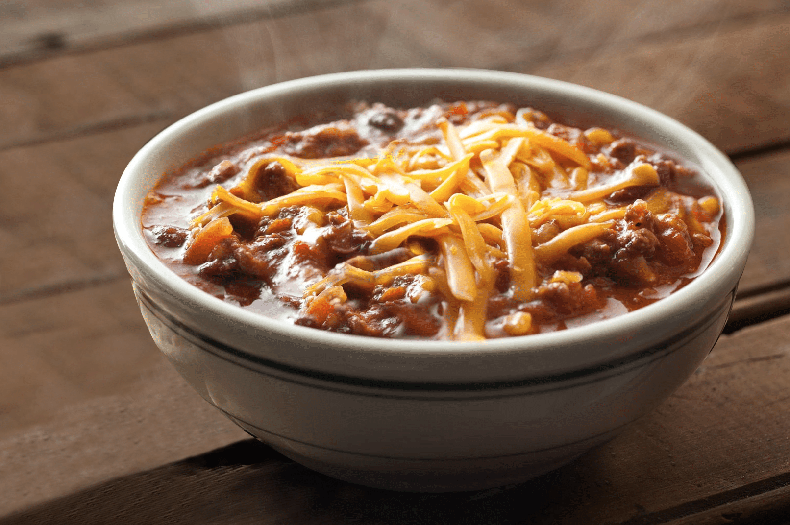

Chili Beans

Fresh Bowl of Chili Beans
This is homemade chili beans made with ground beef and venison.
Ingredients
- 1 bell pepper, chopped
- 1 med. onion, yellow, chopped
- 4 cloves of garlic, crushed
- 2 Tbsp Olive oil
- 2 lbs. ground venison
- 1 lb. ground beef
- 2 26 oz cans of crushed tomatoes
- 1 16 oz can tomato sauce
- 1 4 oz can tomato paste
- 2 16 oz cans of water
- Salt, pepper, paprika, cumin
Steps
- Saute Bell pepper, onions and garlic in the olive oil
- Brown meats in oil and vegetables
- Add tomatoes, tomato sauce and paste and 2 cans of water
- Add seasonings and bring to boil
- Simmer for 45 minutes on low heat.
- Stir occasionally.
- Serve with Hot Crackers and cheddar cheese